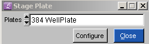
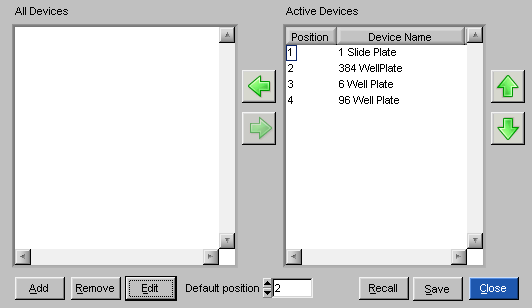
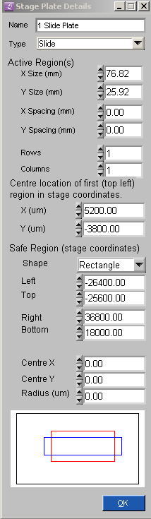
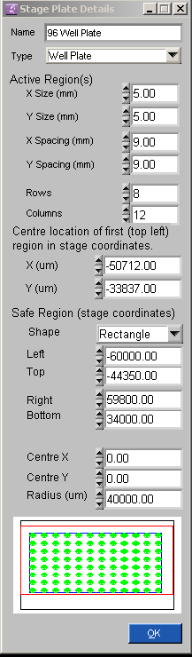

Stage Plates

The type of Stage plate can be chosen from the list
Configure - opens the dialog box (below) where different Stage
plates can
be added, removed and edited.
Close - closes the
dialog box.

Add - adds a
new Stage plate
Remove - removes
a Stage plate
from the list.
Edit - opens the
dialog box (below) where specific information regarding the Stage
plate
is stored.
Recall - Loads
a Stage plate list from file.
Save - Saves the
current Stage plate list to a file.
Close - closes the
dialog box.
Slide Plate configuration
Well Plate configuration.
Stage plate
details - 1 Slide Plate

Name - 1 Slide Plate,
6 Well plate, 96 Well plates, 384 Well Plates
Type - Well plate,
slide dish - in the case of "1 Slide plate" its "slide dish"
Active Region - blue rectangle
in the diagram.
X Size (mm) - 76.82 (in the case of a 3 inch cover slide).
Y Size (mm) -
25.92 (in the case of a 3 inch cover slide).
X Spacing (mm) - 0 (in
the case of a 3 inch cover slide).
Y Spacing (mm)
- 0 (in the case of a 3 inch cover slide).
Rows - 1 (in the case
of a 3 inch cover slide).
Columns - 1 (in the
case of a 3 inch cover slide).
Center location of first region of interest (in the case of 1 slide its
the center coordinates of the slide).
X (um) - 5200.00
Y (um) - -3800.00
Safe Region (stage coordinates) - red rectangle in the diagram.
Shape - Rectangle, circle.
If Shape = rectangle
Left - stage
coordinate.
Top - stage
coordinate.
Right - stage
coordinate.
Bottom - stage
coordinate.
If Shape = circle
Centre X - stage
coordinate.
Centre Y - stage
coordinate.
Radius (um) - size of
radius.
Diagram
Red rectangle - stage safe
region
(stage can't go outside this region).
Blue Rectangle - active size
region (where sample / region of interest is located).
Black Rectangle - absolute stage limits (fixed by hardware).
Stage plate
details - 96 Well Plate

Name - 1 Slide Plate,
6 Well plate, 96 Well plates, 384 Well Plates
Type - Well plate,
slide dish - in the case of "96 Well plates" its "96 Well plates"
Active Region - green circles in
the diagram.
X Size (mm) - 5 (in the case of a 96 well plate).
Y Size (mm)
- 5 (in the case of a 96 well plate).
X Spacing (mm) - 9 (in
the case of a 96 well plate).
Y Spacing (mm)
- 9 (in the case of a 96 well plate).
Rows - 8 (in the case
of a 96 well plate).
Columns - 12 (in the
case of a 96 well plate).
Center location of first region of
interest (in the case of a multi well plate its the top left well).
X (um) - -50712.00
Y (um) - -33837.00
Safe Region (stage coordinates) - red rectangle in the diagram.
Shape - Rectangle, circle.
If Shape = rectangle
Left - stage
coordinate.
Top - stage
coordinate.
Right - stage
coordinate.
Bottom - stage
coordinate.
If Shape = circle
Centre X - stage
coordinate.
Centre Y - stage
coordinate.
Radius (um) - size of
radius.
Diagram
Red rectangle - stage safe region
(stage can't go outside this region).
Blue Rectangle - active size
region (where sample / region of interest is located).
Black Rectangle - absolute stage limits (fixed by hardware).
Green Circles - wells.